Contents
Q1
img = phantom(128);
Q1 Part a
- The required myIntegration() function is in the 'Code' folder.
Step size 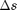 - Inter-pixel distance along any line in the image lies in the range [1, 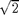 ] pixel-width units. Hence, the step size should be chosen such that it is between 1 and pixel-width unit since choosing this step size ensures that just the correct amount of information along that line in the image gets captured in the Radon transform. If the step size is too large, it results in information loss, while a very small step size gives no further information than the above mentioned choice, thus providing no benefit but unnecessary increase in computation.
Interpolation method - We would prefer bilinear interpolation method for the interpolation of image.
Q1 Part b
The required myRadonTrans() function is in the 'Code' folder.
Radon transform for step size 3 is plotted below:
t = -90:5:90;
theta = 0:5:175;
Rf = myRadonTrans(img,t,theta,3); % Radon transform for step size 3
figure();
display1(Rf);
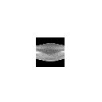 Q1 Part c
Radon transform images for different step sizes of s
Rf_05 = myRadonTrans(img,t,theta,0.5); Rf_1 = myRadonTrans(img,t,theta,1); Rf_3 = myRadonTrans(img,t,theta,3); figure(); subplot(1,3,1); imshow(Rf_05/max(max(Rf_05))); title('Step = 0.5');xlabel('\theta---->');ylabel('t--->'); subplot(1,3,2); imshow(Rf_1/max(max(Rf_1))); title('Step = 1');xlabel('\theta----->');ylabel('t--->'); subplot(1,3,3); imshow(Rf_3/max(max(Rf_3))); title('Step = 3');xlabel('\theta----->');ylabel('t--->'); % 1D function plots for $\theta = 0$ Rf_0_05 = myRadonTrans(img,t,0,0.5); Rf_0_1 = myRadonTrans(img,t,0,1); Rf_0_3 = myRadonTrans(img,t,0,3); figure(); p1 = plot(t,Rf_0_05/max(Rf_0_05),'r'); hold on p2 = plot(t,Rf_0_1/max(Rf_0_1),'g'); hold on p3 = plot(t,Rf_0_3/max(Rf_0_3),'b'); hold off legend([p1 p2 p3],'\Delta s = 0.5','\Delta s = 1','\Delta s = 3'); title('\theta = 0^o'); xlabel('t'); ylabel('Rf(t,0)'); % 1D function plots for $\theta = 90$ Rf_90_05 = myRadonTrans(img,t,90,0.5); Rf_90_1 = myRadonTrans(img,t,90,1); Rf_90_3 = myRadonTrans(img,t,90,3); figure(); p1 = plot(t,Rf_90_05/max(Rf_90_05),'r'); hold on p2 = plot(t,Rf_90_1/max(Rf_90_1),'g'); hold on p3 = plot(t,Rf_90_3/max(Rf_90_3),'b'); hold off legend([p1 p2 p3],'\Delta s = 0.5','\Delta s = 1','\Delta s = 3'); title('\theta = 90^o'); xlabel('t'); ylabel('Rf(t,90)');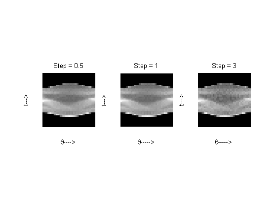 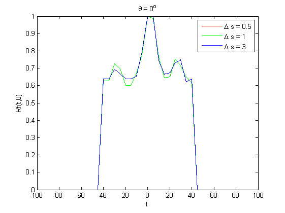 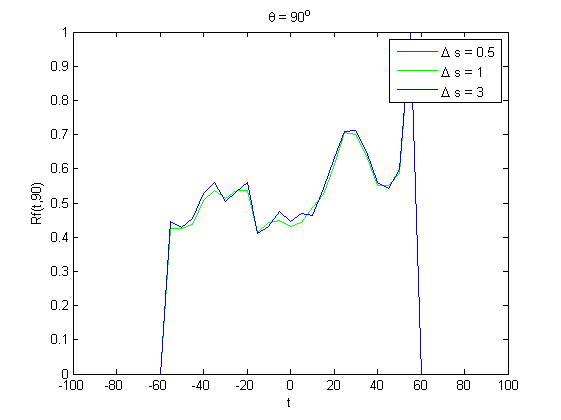
Q1 part d
- The normalised 1D plot and the image for 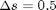 and 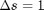 appear similar and are smoother compared to their counterparts with = 3. This former part can be explained by the fact that both 0.5 and 1 are less than or equal to the inter-pixel distance and hence capture equal amounts of information about the image and hence corresponding 1D plots overlap. The observation that 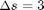 is rougher can be explained by the fact that larger step size implies a cruder estimate of the integral along any given line.
- There will be trade off between quality of desired image and the computational cost. If we require high quality then we would choose smaller values of 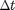 and 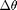 as it would result in increased resolution. However, this would increase acquisition time of the CT scan as well the computation involving in reconstructing the required data. Hence value of and should be chosen depending on the individual requirements in different situations.
Q1 part e
- Increasing the number of pixels in the grid would result in a larger A matrix resulting in better quality of reconstruction but more expensive computation.
- Larger implies the measurements 'b' in the ART equation Ax = b would be noisier resulting in poorer reconstruction. On the other hand, smaller implies better quality of measurements 'b' and hence better reconstruction.
Q2
tic; img = phantom(256); n_fft = 1024; w_max = n_fft/2;
Q2 Part a
theta = 0:3:177; h = radon(img,theta); % Radon transform of the image backproj_no_filtering = iradon(h,theta,'None'); % Back projection without filtering figure(); subplot(1,2,1); imshow(img);title('Original image'); subplot(1,2,2); display1(backproj_no_filtering);title('Unfiltered backprojection'); % Computing filtered Radon Transform filtered_1_RL = myFilter(h, 'Ram-Lak', w_max,n_fft); filtered_1_SL = myFilter(h, 'Shepp-Logan', w_max,n_fft); filtered_1_CS = myFilter(h, 'Cosine', w_max,n_fft); filtered_2_RL = myFilter(h, 'Ram-Lak', w_max/2,n_fft); filtered_2_SL = myFilter(h, 'Shepp-Logan', w_max/2,n_fft); filtered_2_CS = myFilter(h, 'Cosine', w_max/2,n_fft); % Computing filtered backprojection reconstructed_1_RL = iradon(filtered_1_RL,theta,'None'); reconstructed_1_SL = iradon(filtered_1_SL,theta,'None'); reconstructed_1_CS = iradon(filtered_1_CS,theta,'None'); reconstructed_2_RL = iradon(filtered_2_RL,theta,'None'); reconstructed_2_SL = iradon(filtered_2_SL,theta,'None'); reconstructed_2_CS = iradon(filtered_2_CS,theta,'None'); figure(); subplot(2,3,1); imshow(reconstructed_1_RL); title('L = \omega_{max}, Ram-Lak'); subplot(2,3,2); imshow(reconstructed_1_SL); title('L = \omega_{max}, Shepp-Logan'); subplot(2,3,3); imshow(reconstructed_1_CS); title('L = \omega_{max}, Cosine'); subplot(2,3,4); imshow(reconstructed_2_RL); title('L = \omega_{max} /2, Ram-Lak'); subplot(2,3,5); imshow(reconstructed_2_SL); title('L = \omega_{max} /2, Shepp-Logan'); subplot(2,3,6); imshow(reconstructed_2_CS); title('L = \omega_{max} /2, Cosine');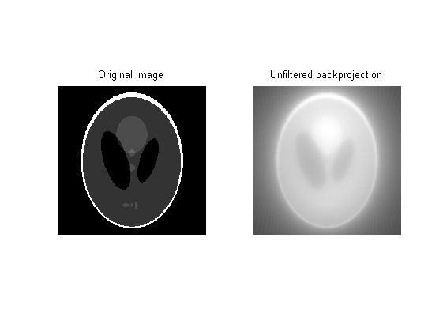 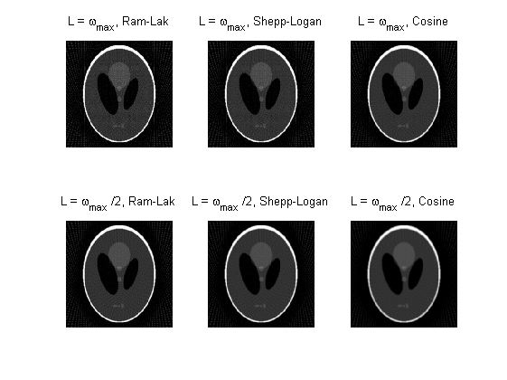
Filter combinations:
- The smoothness of the reconstructed images increases in the order: Ram-Lak filter < Shepp-Logan filter < Cosine filter
- This is because the low frequency response of all the filters is almost the same while the higher frequencies get more and more attenuated in the above filter order, leader to smoother images.
Filter parameters:
- The corresponding images in any given filter combination for L = 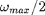 are smoother than those with L = 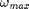, which is obvious from the fact that the latter contain more high frequency components.
Q2 part b
img = phantom(256); % Get blurred images mask_1 = fspecial('gaussian',11,1); blurred_img_1 = conv2(img,mask_1,'same'); mask_2 = fspecial('gaussian',51,5); blurred_img_2 = conv2(img,mask_2,'same'); figure(); subplot(1,3,1); imshow(img);title('Original image S_0'); subplot(1,3,2); imshow(blurred_img_1);title('S_1 (11,1)'); subplot(1,3,3); imshow(blurred_img_2);title('S_5 (50,5)'); % Compute filtered back projections theta = 0:3:177; Rf_0 = radon(img,theta); Rf_1 = radon(blurred_img_1,theta); Rf_5 = radon(blurred_img_2,theta); filtered_Rf0 = myFilter(Rf_0, 'Ram-Lak', 512, 1024); filtered_Rf1 = myFilter(Rf_1, 'Ram-Lak', 512, 1024); filtered_Rf5 = myFilter(Rf_5, 'Ram-Lak', 512, 1024); R0 = iradon(filtered_Rf0,theta,'None'); R1 = iradon(filtered_Rf1,theta,'None'); R5 = iradon(filtered_Rf5,theta,'None'); figure(); subplot(1,3,1); imshow(R0);title('Reconstructed original R_0'); subplot(1,3,2); imshow(R1);title('Reconstructed R_1 (11,1)'); subplot(1,3,3); imshow(R5);title('Reconstructed R_5 (50,5)'); % Compute RRMSE RRMSE_0 = RRMSE(img,R0) RRMSE_1 = RRMSE(blurred_img_1,R1) RRMSE_5 = RRMSE(blurred_img_2,R5)
RRMSE_0 =
0.1286
RRMSE_1 =
0.0782
RRMSE_5 =
0.0262
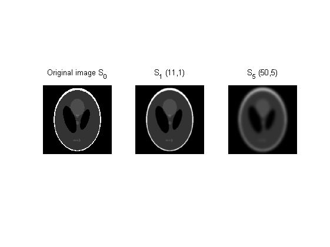 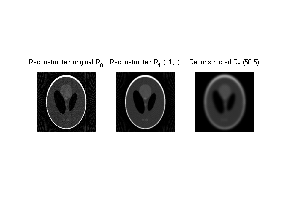 - The RRMSE is the highest in the original image, lesser in the image with Gaussian filter (11,1) and the least in the image with the Gaussian filter (51,5).
- As the standard deviation increases, the images gets more and more blurred thus resulting in decreased higher frequency components. Since we are using a comparatively large step size 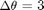, we are indeed unable to capture the high frequency components(rapid changes) in the image and hence the image which is the smoothest( the one with Gaussian filter of standard deviation 5) has a reconstruction closest to the corresponding input image.
Q2 Part c
RRMSE values as a function of L
for i = 1:w_max filtered_Rf0 = myFilter(Rf_0, 'Ram-Lak', i, n_fft); filtered_Rf1 = myFilter(Rf_1, 'Ram-Lak', i, n_fft); filtered_Rf5 = myFilter(Rf_5, 'Ram-Lak', i, n_fft); R0 = iradon(filtered_Rf0,theta,'None'); R1 = iradon(filtered_Rf1,theta,'None'); R5 = iradon(filtered_Rf5,theta,'None'); RRMSE_0(i) = RRMSE(img,R0); RRMSE_1(i) = RRMSE(blurred_img_1,R1); RRMSE_5(i) = RRMSE(blurred_img_2,R5); end figure(); p1 = plot(RRMSE_0,'r'); hold on p2 = plot(RRMSE_1,'g'); hold on p3 = plot(RRMSE_5,'b'); hold off legend([p1 p2 p3],'RRMSE(S_0,R_0)','RRMSE(S_1,R_1)','RRMSE(S_5,R_5)'); title('RRMSE values as a function of L'); xlabel('L'); ylabel('RRMSE'); toc;
Elapsed time is 507.998921 seconds.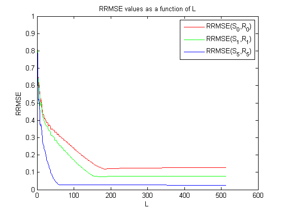
- As we can see from the plots, the RRMSE initially decreases with increasing L, since more and more information about the image is getting captured. The RRMSE becoming constant at higher L values indicates that the phantom image does not contain very high amount of information in high frequency regions.
- The RRMSE in general decreases in the order original image > blurred with std deviation 1 > blurred with std deviation 5. This is as explained in part (b).
- Had there been higher frequency acquisition noise in the image, the RRMSE would have increased with increasing L in the current flat regions in the plots.
Q3
tic; % loading mat files CT_Chest = load('../data/CT_Chest.mat'); chest = CT_Chest.imageAC; myPhantom = load('../data/myPhantom.mat'); phantom = myPhantom.imageAC;
Q3 Part a
Calculating RRMSE for each 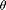
[rrmse_chest, theta_chest] = find_theta(chest); [rrmse_phantom, theta_phantom] = find_theta(phantom); figure();plot(rrmse_chest);xlabel('\theta -->');ylabel('RRMSE --->'); title(' RRMSE vs \theta for CT Chest'); figure();plot(rrmse_phantom);xlabel('\theta -->');ylabel('RRMSE --->'); title(' RRMSE vs \theta for myPhantom');
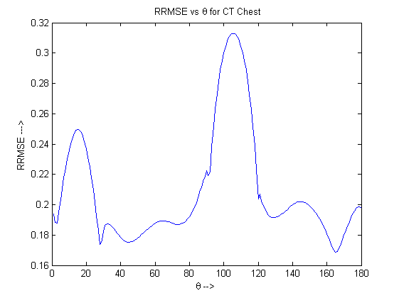 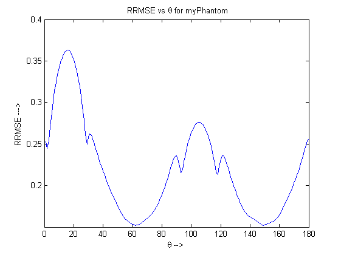For the CT Chest data, the value of which minimises the RRMSE values between the ground-truth images and the reconstructed images is
theta_chest
theta_chest = 165
The optimal for the Phantom data is
theta_phantom
theta_phantom = 62Q3 Part b
Recontructing for optimal theta
reconst_chest= iradon(radon(chest,theta_chest+(0:149)),theta_chest+(0:149)); reconst_phantom= iradon(radon(phantom,theta_phantom+(0:149)),theta_phantom+(0:149));
hFig = figure(); set(hFig, 'Position', [1 1 1600 500 ]); subplot(1,2,1); display1(chest);title('Original CT Chest image'); subplot(1,2,2); display1(reconst_chest); title('Reconstructed CT Chest image'); hFig = figure(); set(hFig, 'Position', [1 1 1600 500 ]); subplot(1,2,1); display1(phantom);title('Original myPhantom image'); subplot(1,2,2); display1(reconst_phantom); title('Reconstructed myPhantom image'); toc;
Elapsed time is 188.733259 seconds.
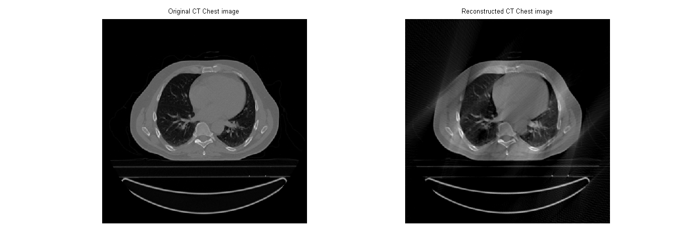 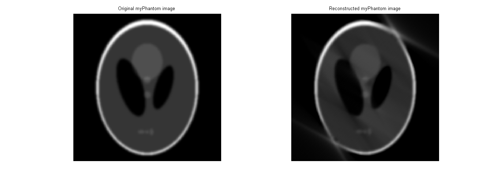